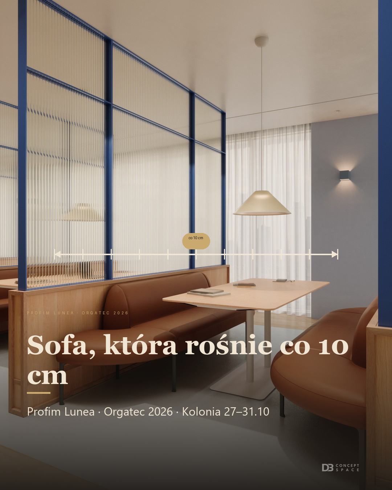
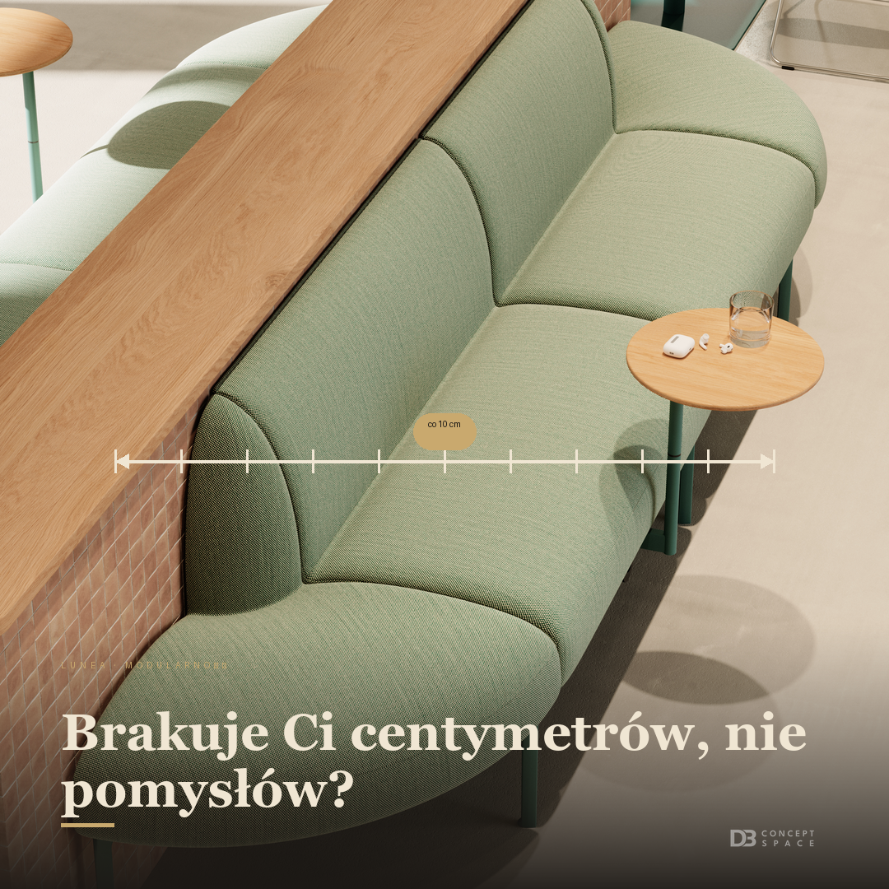
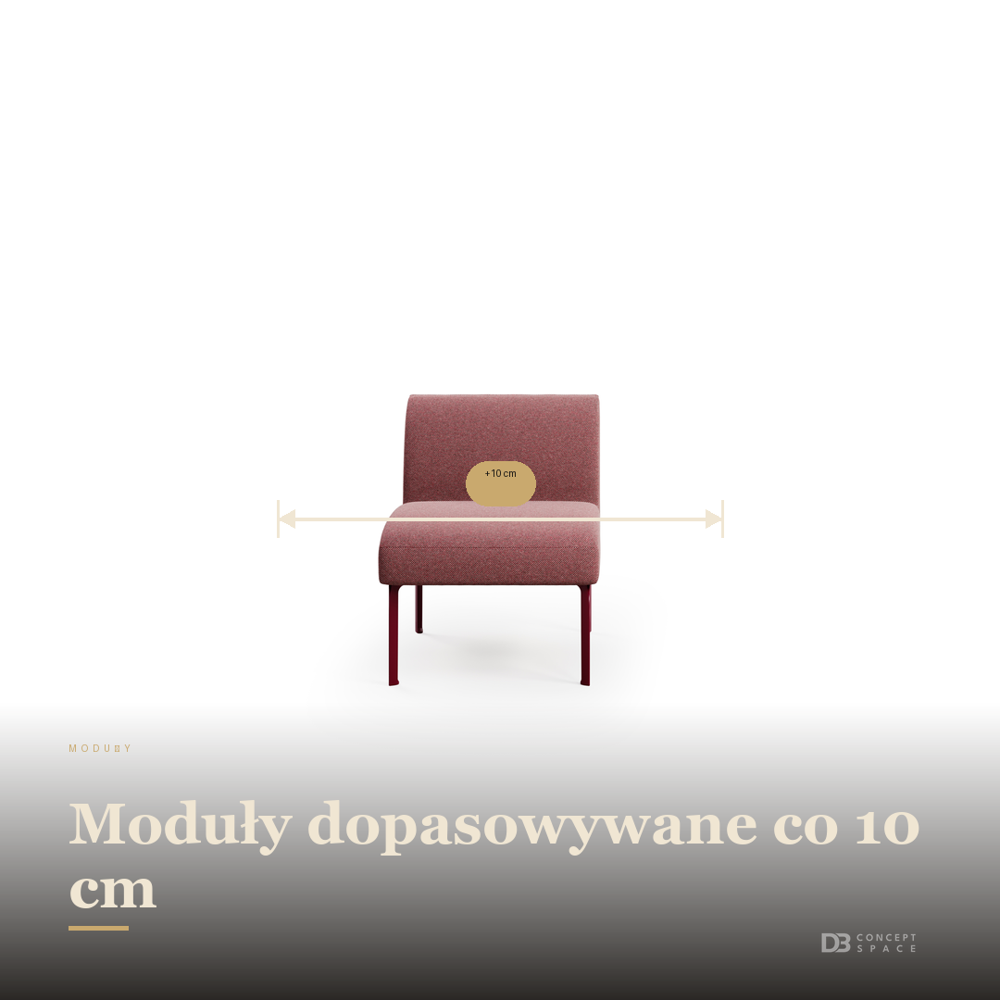
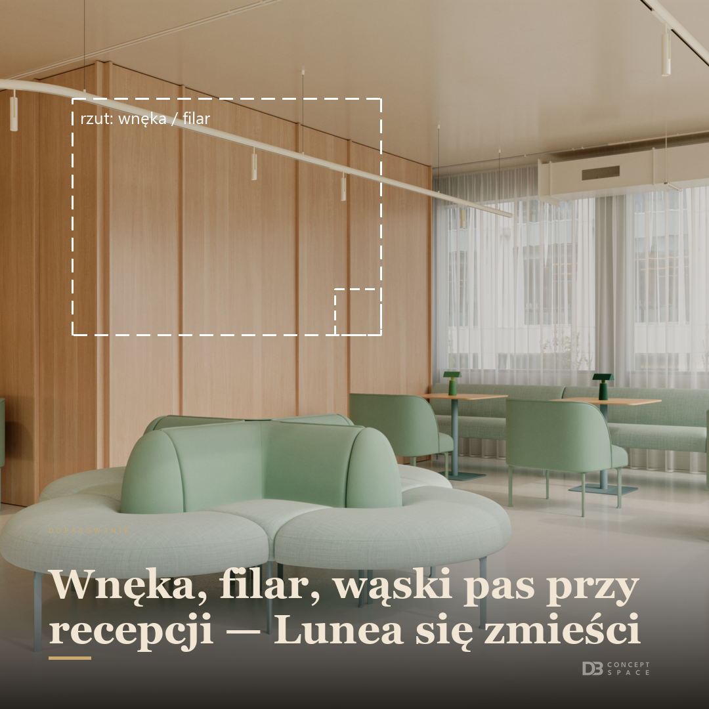
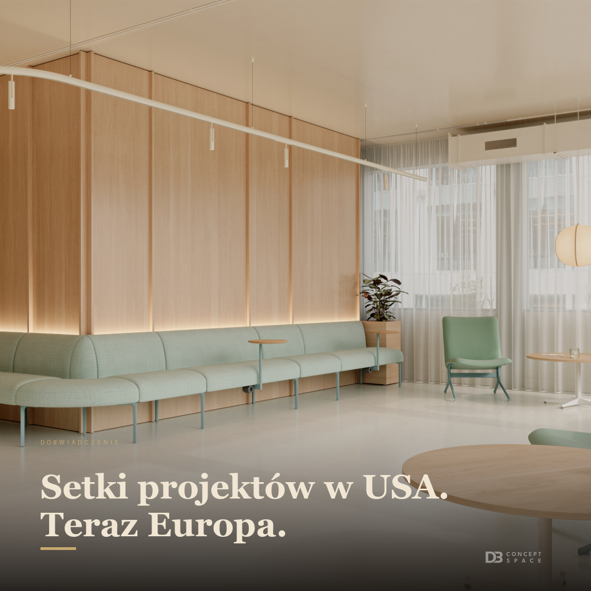
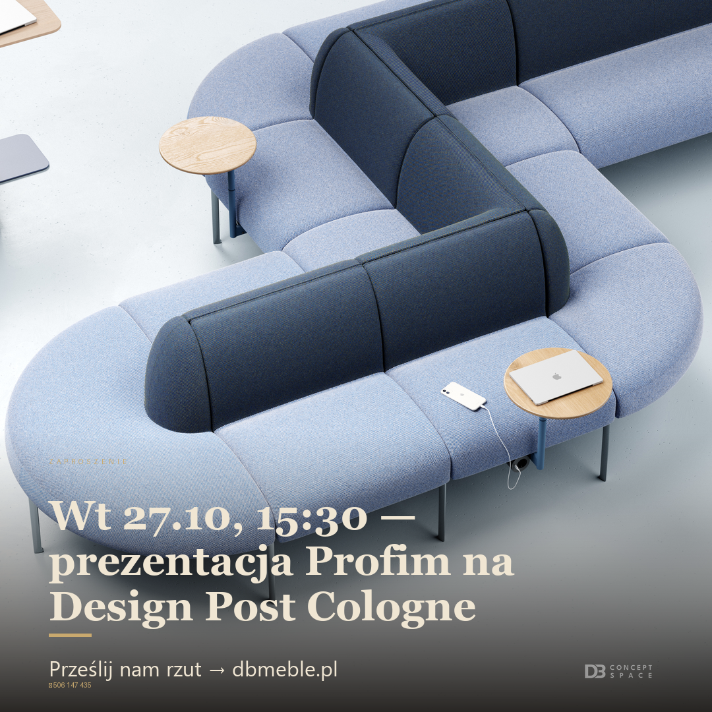

„Sofa, która rośnie co 10 cm” · Profim Lunea · Orgatec 2026 · Kolonia 27–31.10 · + miarka co 10 cm (kod)
↓ Karuzela LinkedIn (PDF, 5 slajdów)

„Brakuje Ci centymetrów, nie pomysłów?” · + miarka co 10 cm (kod)

„Moduły dopasowywane co 10 cm” · + linia wymiarowa „+10 cm” (kod)

„Wnęka, filar, wąski pas przy recepcji — Lunea się zmieści” · + biały szkic wnęki (kod)

„Setki projektów w USA. Teraz Europa.” · czyste zdjęcie producenta

„Wt 27.10, 15:30 — prezentacja Profim na Design Post Cologne” · Prześlij nam rzut → dbmeble.pl · 506 147 435